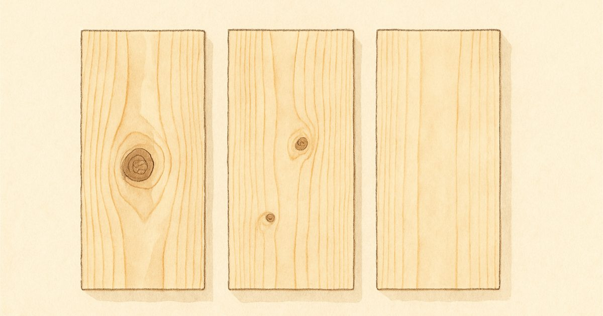
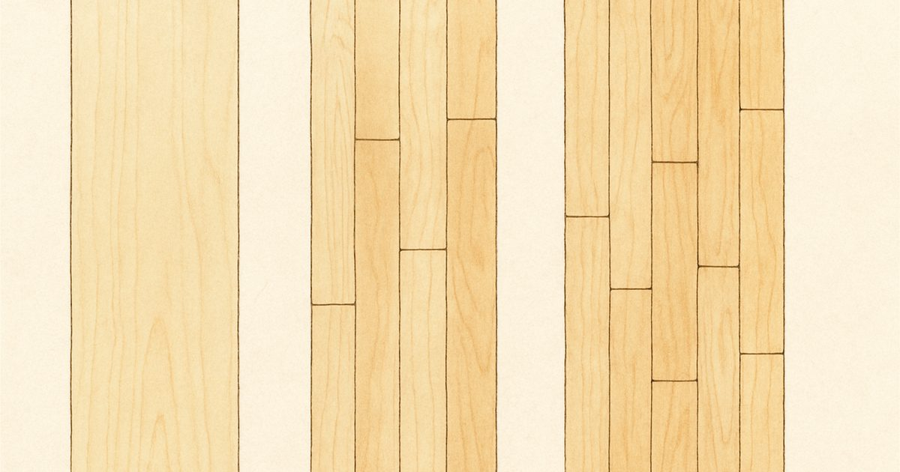
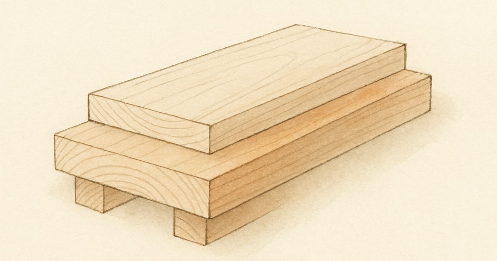
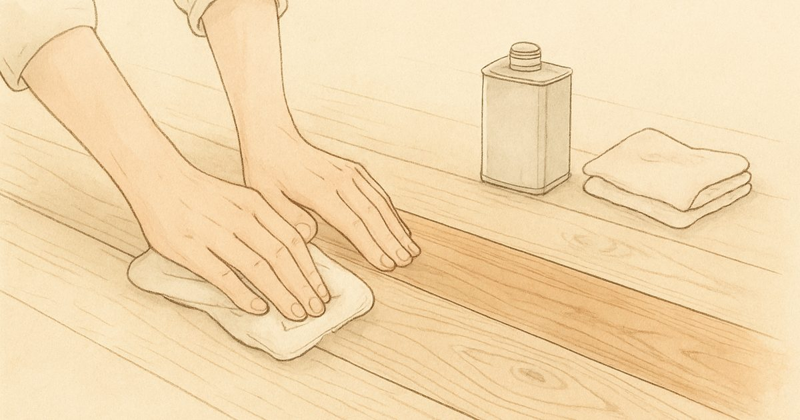
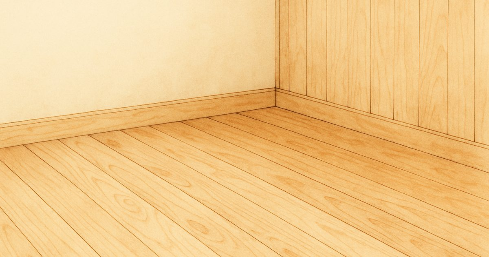
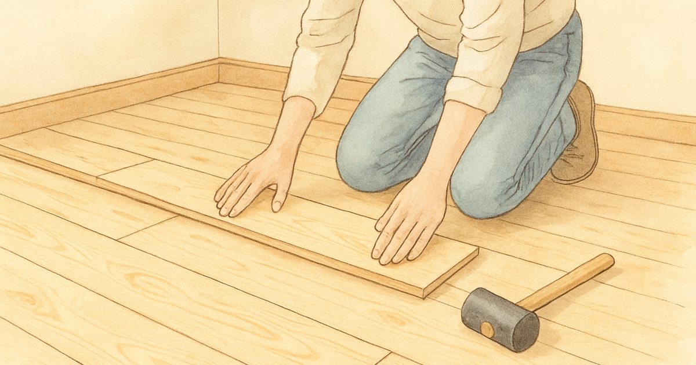
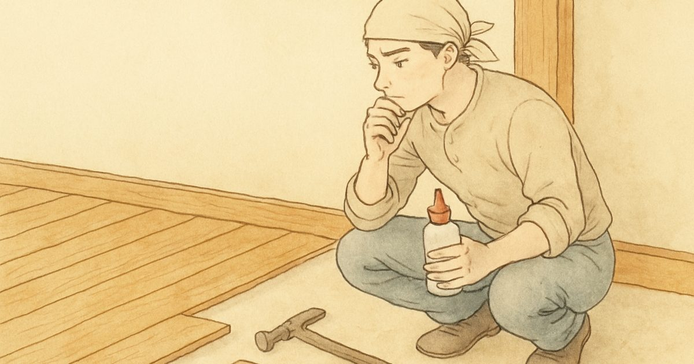
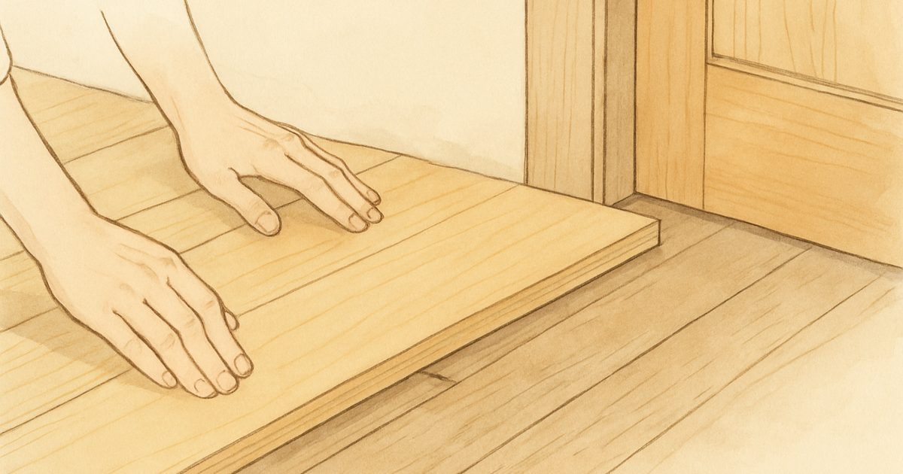
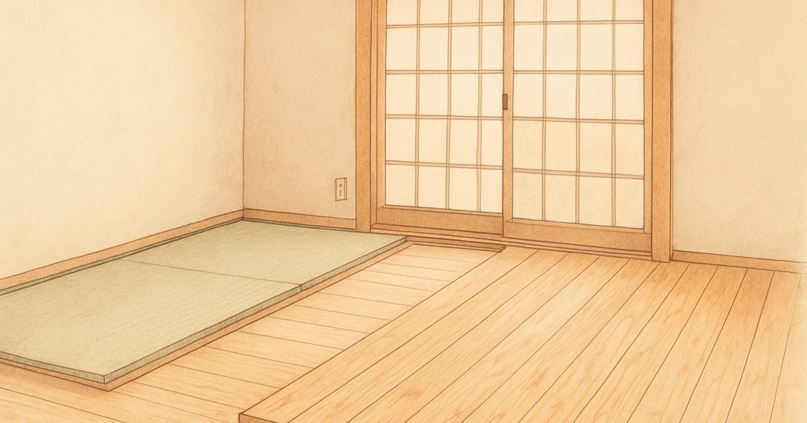
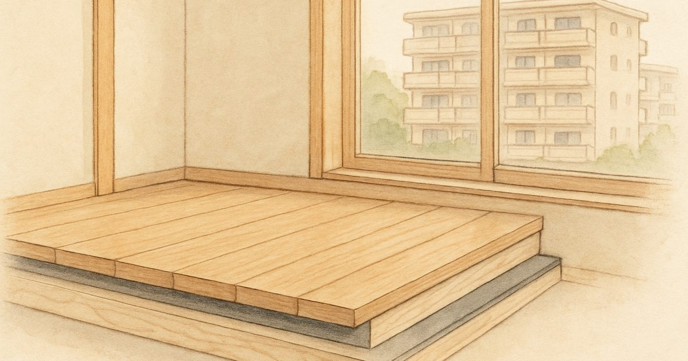

Knowledge
桧フローリングのすべてがわかる
50年以上木と向き合ってきた工場が、良いことも難しいことも正直にお伝えします。気になるカテゴリからお読みください。
購入前ガイド
後悔しないために、悪い面も含めて比較検討
商品知識・規格
グレード・規格・塗装。商品ページの言葉がわかる

商品知識・規格
節有・小節・無節の違いは？グレードの選び方完全ガイド
2026年4月1日（6月12日更新）

商品知識・規格
UNI・OPC・乱尺とは？無垢フローリングの規格と価格差の理由
2026年6月12日

商品知識・規格
15mm厚と30mm厚の違い。根太レスで張れる30mm桧フローリングの実力
2026年6月12日

商品知識・規格
無塗装・オイル・ウレタン塗装の選び方。暮らし方別おすすめ早見表
2026年6月12日

商品知識・規格
フローリングと羽目板の違いとは？用途別おすすめの選び方
2026年2月15日（6月12日更新）
計算・見積もり
必要な量と費用感をつかむ
DIY・施工
工法・道具・失敗回避。自分で張る人の決定版

DIY・施工
DIYで桧フローリングを張る方法。初心者でも失敗しない手順
2026年3月1日（6月12日更新）

DIY・施工
桧フローリングDIYでやってはいけない10のこと。失敗のリカバリ法も解説
2026年6月12日

DIY・施工
フロア釘・ビス・ボンドの使い分け。桧フローリング固定の正解
2026年6月12日

DIY・施工
既存床に重ね張りDIY。ドアが開かない問題と床高15mmの対処法
2026年6月12日

DIY・施工
畳の和室を桧フローリングに。高さ55〜60mmを埋める下地の作り方
2026年6月12日

DIY・施工
マンションで桧の無垢床は可能？LL45遮音規定をクリアする3つの方法
2026年6月12日
お手入れ・メンテナンス
日常の掃除から再塗装まで、長く美しく
トラブル対処
傷・隙間・シミ。困ったときの対処法